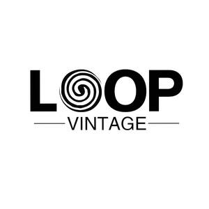

Trade Mark Journal No.2026/010 6 March 2026
UK00004338720 10 February 2026 (14,35)

- Class 14
- Precious metals and their alloys; jewellery, costume jewellery, precious stones; amulets, charms, lockets and trinkets; horological and chronometric instruments, clocks and watches; watch straps and watch bands; statues and works of art of precious metal and/or precious stones; cufflinks; boxes of precious metals; presentation cases; tie clips; tie pins; keyrings; keychains; pins (jewellery); cases for the aforesaid; jewellery cases, caskets, boxes or rolls; parts and fittings for the aforesaid.
- Class 35
- Advertising and marketing services; sales promotion services; business management services; professional business consultation relating to the operation of businesses; auctioneering; buyer to supplier matching services; organisation, administration, operation and supervision of loyalty schemes, incentive schemes, promotional schemes and reward schemes; administration of share schemes and savings schemes; display presentation services; demonstration of goods; sales promotion for others; import-export agencies; providing a searchable online advertising guide; presentation of goods on communications media for retail purposes; advertising and information distribution services namely providing classified advertising space via a global computer network; provision of an online marketplace for buyers and sellers of goods and services; retail and online retail services connected with the sale of soaps, perfumery, essential oils, cosmetics, hair lotions, body lotions, foot lotions, dentifrices, shoe cream, shoe polish, shoe wax, nail care preparations, nail varnish, nail polish, nail varnish and polish removing preparations, talcum powder, sunscreen preparations, sun-tanning preparations, pumice stone, emery boards, candles and wicks for lighting, Christmas tree candles, nightlights (candles), scented candles, beeswax, grease for shoes, oil for the preservation of leather, metal hardware, buckles, metal name plaques, key rings, key fobs, sunglasses, spectacles, sunglasses and spectacles cases and frames, encoded bank cards, bags made of leather or imitations of leather adapted for electrical apparatus and instruments, domestic electrical and electronic equipment, apparatus for recording, transmission or reproduction of sound or images, magnetic data carriers, recording discs, pre-recorded CD's, CD ROM's, tapes and discs, protective footwear, precious metals and their alloys, ornaments, statutes and figurines made of or coated with precious metals or imitations thereof, clothing ornaments made of or coated with precious metals or imitations thereof, jewelry and chains made of or coated with precious metals or imitations thereof, jewelry boxes and cases made of or coated with precious metals or imitations thereof, objet d'art made of or coated with precious metals or imitations thereof, ashtrays for smokers made of or coated with precious metals or imitations thereof, snuff boxes made of or coated with precious metals or imitations thereof, napkin rings made of or coated with precious metals or imitations thereof, decanter labels made of or coated with precious metals or imitations thereof, cruet stands made of or coated with precious metals or imitations thereof, money clips and tie clasps made of or coated with precious metals or imitations thereof, jewellery, costume jewellery, precious stones, horological and chronometric instruments, leather and imitations of leather, trunks, travelling bags, handbags, purses, wallets, hat boxes, umbrellas, parasols, walking sticks, fabrics (textile piece goods), towels, bath linen, face towels of textile, napkins or tissues of textile for removing make-up, handkerchiefs of textile, bed linen, bed spreads, mattress covers, pillow cases, quilts, sheets, table linen, table napkins, table runners, table mats, table cloths, travelling rugs, furniture covers, shower curtains, fabric for boots and shoes, lingerie fabric, clothing, footwear and headgear; advice and assistance in the selection of goods; including, but not limited to, all the aforesaid services provided via the Internet, the world wide web and/or via communications networks; advertising services and promotional services by electronic means; rental of advertising space; publication of advertising texts; direct mail advertising; online advertising on a computer network; opinion polling services; marketing studies; services relating to commercial promotion activity of all kinds, namely, sponsorship searching services, and promotional information campaigns; advertising, marketing and promotional services; business advice and assistance relating to franchising; business management advisory services relating to franchising; advisory services relating to the establishment and operation of franchises; services rendered by a franchisor, namely, assistance in the running and management of industrial or commercial enterprises; information, advisory and consultancy services in relation to the aforesaid.
LEI SHI